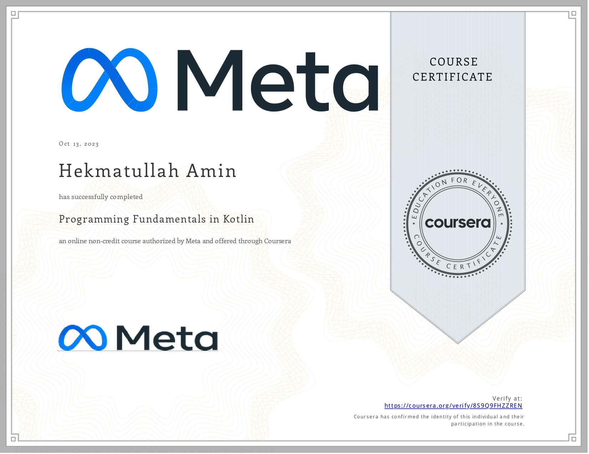
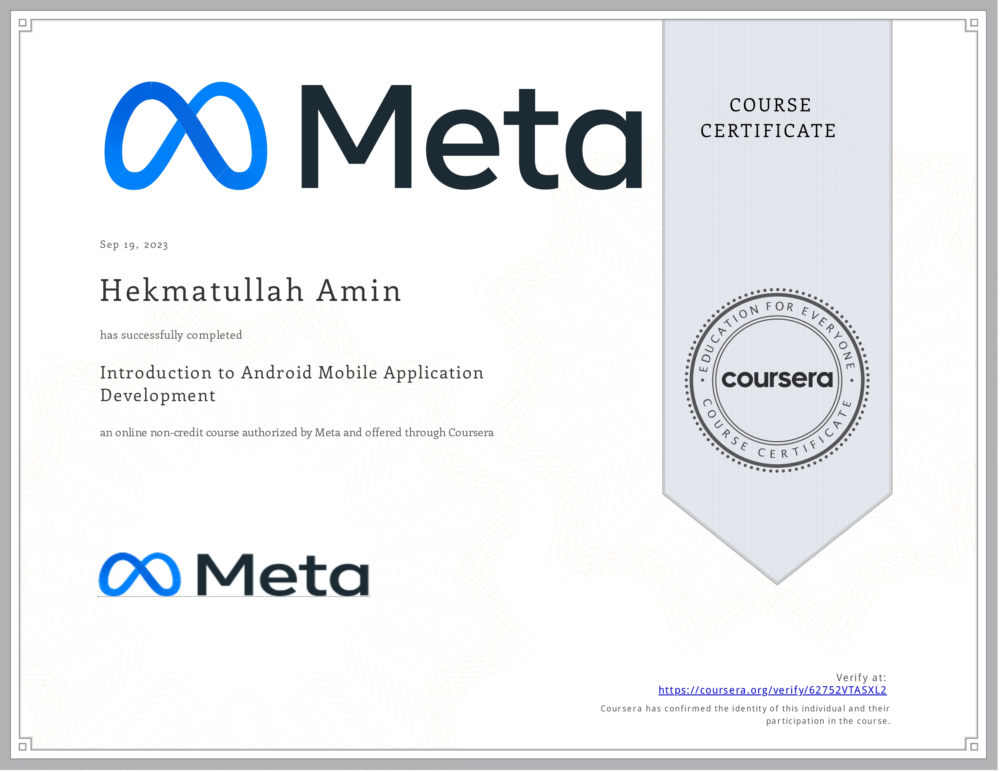
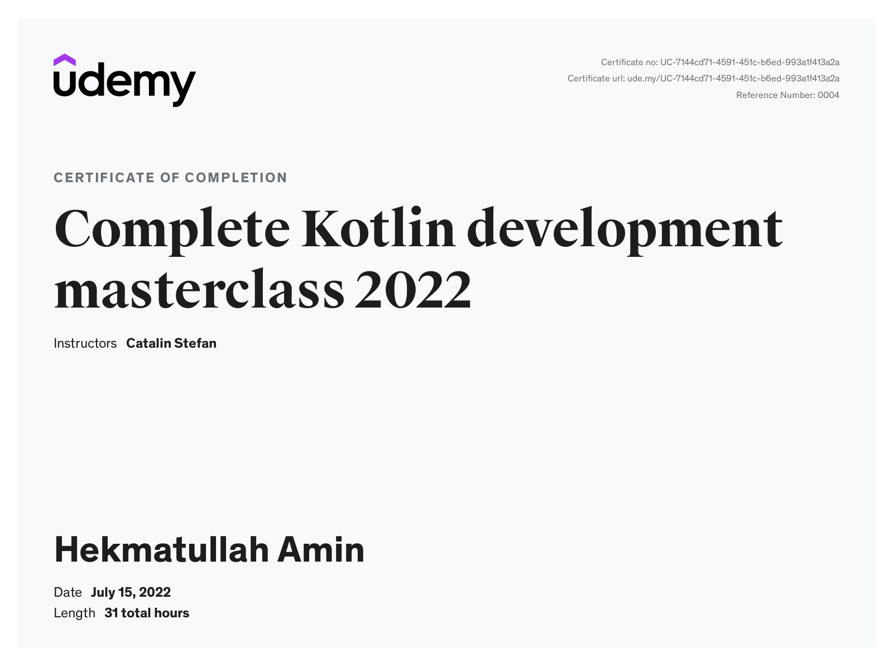
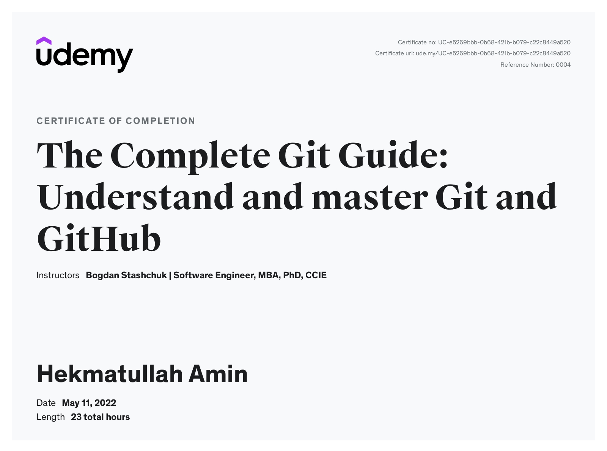
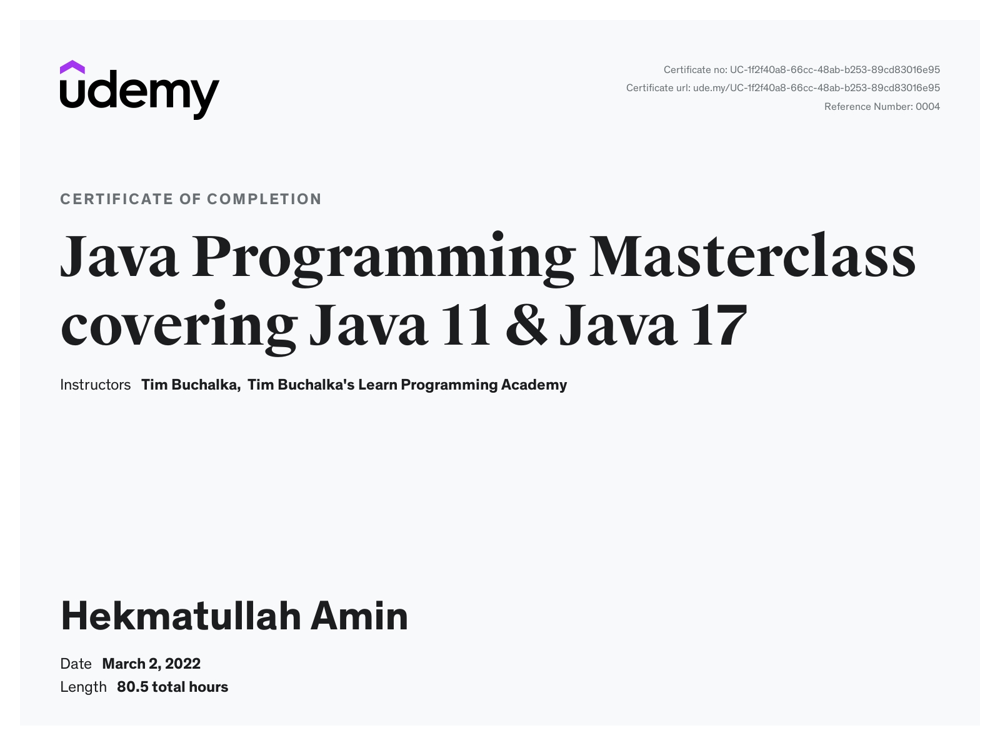
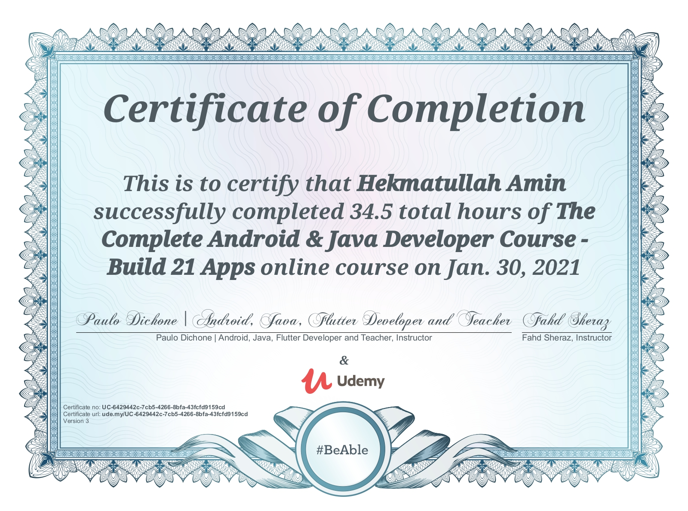

Upon completing the "Google Play Store Listing" exam, I successfully demonstrated my ability to create effective and engaging Google Play store listings for mobile apps and games. The exam tested my skills in adhering to best practices for crafting compelling app or game descriptions, selecting the right store listing assets, and marketing to a global audience. This certificate verifies my proficiency in mobile marketing, app growth strategies, and leveraging Google Play to enhance app visibility and increase downloads. It showcases my capability to optimize a product’s presence on Google Play to reach a wide and diverse user base.

Upon completing the "Android App Capstone" course, I successfully developed a fully functional Android app for a restaurant ordering system using Jetpack Compose in Android Studio. I demonstrated proficiency in setting up version control with Git and GitHub, planning UX/UI design with Figma, implementing an onboarding flow, creating a user profile page, and building a dynamic menu interface with data fetching and filtering capabilities. I also engaged in peer reviews, completed a graded assessment, and explored the process of publishing an app to the Google Play Store. This project showcases my ability to integrate various Android development skills into a cohesive, real-world application.

Completed the Working with Data in Android course, mastering web technologies and persistent data handling in Android applications. Developed expertise in web communication, Kotlin applications' interaction with data formats and web protocols, and asynchronous programming techniques. Acquired advanced knowledge of SQLite database management, including the use of Room, integration of code from other languages, and building data-driven Android apps with connections to custom-built web APIs and database management systems.

Completed the Create the User Interface in Android Studio, gaining foundational skills in creating meaningful and functional user interfaces for Android using Kotlin. Explored various approaches for UI building, including Jetpack Compose, understanding composables, state management, and adhering to Material Design guidelines. Mastered the application of themes, custom styles, and animations to enhance UI aesthetics.

Completed Coursera's Advanced Programming in Kotlin course, gaining expertise in building robust Android apps. Acquired advanced Kotlin features, implemented Android applications with Activities, incorporated advanced object-oriented concepts, performed unit testing with mocks and fakes, utilized Lambda expressions, and mastered collection processing methods for efficient development.

Completed UX/UI Design course, mastering skills in problem identification, user empathy, and iterative design. Proficient in creating wireframes, MVP prototypes, and adhering to design principles. Can now design digital products that solve user problems, recognize successful UX/UI, and employ best practices in interaction design."

After completing the "Programming Fundamentals in Kotlin" course, I gained a strong foundation in Kotlin programming, covering both basic and advanced concepts. I learned to work with fundamental elements like variables, conditions, and loops, and developed a clear understanding of functions, classes, and objects. I also explored advanced topics, including Kotlin collections such as List, Set, and Map, and their practical applications. By the end of the course, I applied these skills in a graded project, solidifying my ability to write and structure code effectively in Kotlin.

After completing the "Version Control" course, I gained a solid understanding of how modern software developers collaborate efficiently using version control systems. I learned to navigate and execute commands in Linux, manage code revisions, and create automated workflows to optimize development processes. I developed proficiency in Git, including creating and managing repositories, handling branches, and collaborating on projects through GitHub. This course equipped me with the skills to implement effective version control, streamline software development workflows, and manage projects from local development to live production.

After completing the "Android Firebase Firestore - Masterclass - Build a Shop App" course, I developed a comprehensive e-commerce application using Firebase's Firestore database. I gained expertise in cloud-based Android app development, including uploading and downloading data, displaying images from the cloud, creating user profiles, and managing a cart system. I built the "MyShopPal" app from scratch, which can be customized for personal use or adapted as a template for client projects. This course equipped me with the skills to create not only e-commerce apps but also other cloud-based applications like WhatsApp or Instagram.

Completing the "Introduction to Android Mobile Application Development" course provided me with a solid foundation in Android app development. I gained knowledge of mobile platforms, specifically Android, and became proficient in using Android Studio to create and structure projects. I learned to set up and use emulators, work with Kotlin, and understand the role of Gradle in app development. Additionally, I applied these skills by building a video player app, utilizing project planning, templates, layouts, and the VideoView class. This course equipped me with the essential skills to begin developing Android applications.

After finishing the "Complete Kotlin Development Masterclass," I gained a thorough understanding of Kotlin, mastering both fundamental and advanced topics. I developed expertise in language basics, collections, flow control, and error handling, along with advanced concepts such as Object-Oriented Programming, coroutines, generics, and extensions. Through hands-on projects and exercises, I applied these concepts in real-world scenarios, strengthening my skills in Kotlin programming. This course has equipped me with the knowledge and experience to confidently develop applications in Kotlin, making me proficient in the field.

Upon completing "The Complete Git Guide: Understand and Master Git and GitHub," I gained a deep understanding of Git's internal structure and mastered its features from basic to advanced levels. I learned how to initialize repositories, create and merge branches, resolve conflicts, and perform advanced operations like rebasing and squashing commits. I also became proficient in using GitHub for version control, including pushing, pulling, and managing pull requests. Additionally, I acquired hands-on experience with Git tools like GitHub Desktop, SourceTree, and Visual Studio Code, enhancing my workflow efficiency in both command-line and GUI environments.

Learned the core Java skills needed to apply for Java developer positions in just 14 hours.

Upon completing the "Complete Android & Java Developer Course" course, I acquired comprehensive skills in Android app development and Java programming. I built 21 real-world Android apps, including a WhatsApp clone, a calculator, and a YouTube video player. I gained proficiency in using Android Studio, designing user interfaces, implementing reactive interfaces, navigating between screens, and working with APIs, web services, and advanced databases. Additionally, I learned how to publish apps on Google Play and monetize them, showcasing my ability to create and distribute professional-quality Android applications.